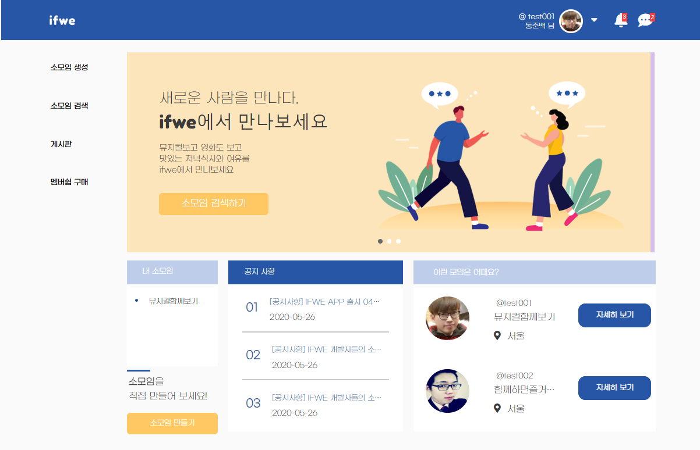
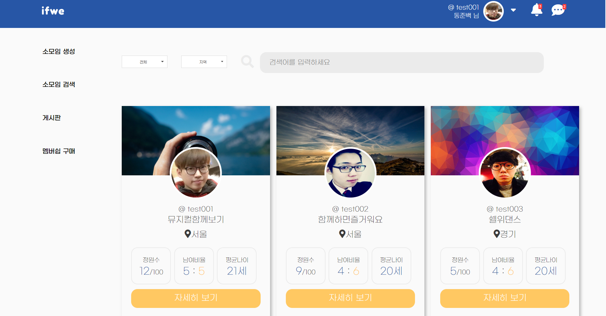

IFWE info
-
 Ifwe Index page 입니다. 사용자 로그인 및 관리자 로그인 가능합니다. 로그인 창에서 회원 가입 및 아이디 비밀번호 찾기 기능이 구현되어있습니다.
Ifwe Index page 입니다. 사용자 로그인 및 관리자 로그인 가능합니다. 로그인 창에서 회원 가입 및 아이디 비밀번호 찾기 기능이 구현되어있습니다. -

Ifwe Main page 입니다. Navi menu 선택을 할 수 있으며, 나의 소모임 바로가기 기능을 지원합니다. 소모임 추천과 공지사항 및 이벤트 배너 슬라이드를 활용 하여 사용자에게 보여줍니다.
-

소모임 검색창입니다. 태그와 지역으로 구분하여 검색이 가능합니다.